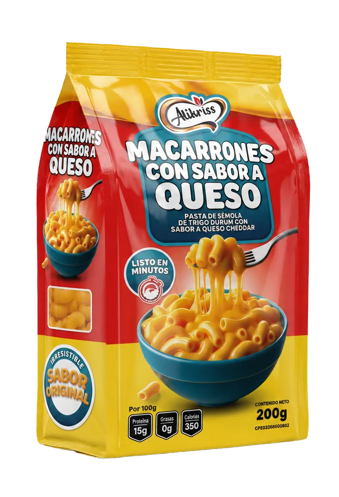

Ingredientes premium
Pasta elaborada con sémola de trigo durum de alta calidad, seleccionada para ofrecer la mejor textura al dente y un sabor auténtico en cada bocado.
Hecho con amor en Venezuela
Nuestros Macarrones con Sabor a Queso traen la calidez del hogar en cada bocado. Pasta de sémola de trigo durum, lista en minutos, con el queso cheddar que toda la familia ama.

La experiencia Alikriss
En Alimentos Kriss creemos que la comida no solo alimenta el cuerpo, reconforta el alma. Nuestros productos nacen de la unión entre naturaleza, innovación y amor por la familia venezolana.
Pasta elaborada con sémola de trigo durum de alta calidad, seleccionada para ofrecer la mejor textura al dente y un sabor auténtico en cada bocado.
Nuestra mezcla exclusiva de queso cheddar en polvo fue desarrollada para crear ese sabor irresistible que tus hijos van a pedir una y otra vez.
La vida es rápida pero la familia no puede esperar. En pocos pasos tendrás un plato caliente, delicioso y lleno de amor sobre la mesa.
Pasta de sémola de trigo durum con sabor a queso cheddar. Preparación sencilla en cuatro pasos que te llevan directo a la felicidad. Sin complicaciones, sin esperas — pura alegría en cada plato.
Fácil de preparar
No necesitas ser chef. Solo necesitas tener Macarrones Alikriss en tu cocina.
Coloca agua en una olla hasta que esté en un hervor fuerte.
Agrega los macarrones y cocina removiendo ocasionalmente hasta que estén al dente.
Cuela los macarrones y retira el exceso de agua.
Abre el sobre, mezcla con los macarrones y disfruta un sabor irresistible.
Por qué elegirnos
Nos nutrimos de las bondades de la naturaleza seleccionando ingredientes frescos y auténticos.
Cada producto pasa por estrictos controles para garantizar lo mejor en tu mesa cada día.
Combinamos tradición y modernidad para crear sabores que sorprenden y conquistan paladares.
Apoyamos el desarrollo de comunidades locales con responsabilidad social corporativa.
Lo que dice Venezuela
La empresa
En Alimentos Kriss, nuestra inspiración nace de la unión armoniosa entre la naturaleza y la innovación. Cada producto refleja nuestra filosofía: calidad de ingredientes fusionada con espíritu moderno.
Ofrecer productos de calidad e innovación que fidelicen a nuestros clientes, satisfagan sus necesidades nutricionales y apoyen el desarrollo de comunidades locales y globales.
Ser reconocidos como empresa ejemplar en la gestión de la cadena agroalimentaria, cumpliendo los más altos estándares de servicio para brindar bienestar a las personas y al planeta.
Una empresa que se nutre de la naturaleza, se compromete con la calidad y se inspira en la modernidad. Cada elemento fue seleccionado para reflejar nuestros valores fundamentales.
Lleva a tu mesa el sabor que toda Venezuela está amando. Escríbenos y encuentra nuestros productos en tu ciudad.
Escríbenos hoyinfo@alimentoskriss.com · www.alimentoskriss.com